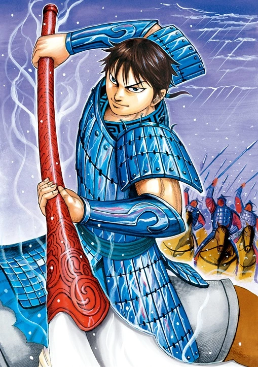

Article sur le général Li Xin
Les origines de Li Xin
Ses Exploits
Li Xin (image)
Li Xin (李信) était un général de l'époque de la fin des Royaumes combattants et de la dynastie Qin. Li Xin est principalement connu pour son rôle pour aider Qin Shi Huang dans sa conquête des six Royaumes combattants ainsi que pour son courage et sa bravoure. En dehors de sa carrière dans les campagnes des Royaumes Combattants, il est également un ancêtre de la cinquième génération de Li Guang sous la dynastie des Han. Il est par extension, un ancêtre de la dynastie Tang. En tant que fils du gouverneur de la commanderie de Nanjun, Li Yao, il a accompli ses exploits sur les champs de bataille, principalement pendant le règne de Qin Shi Huang.
Conquête de Zhao En 228, Li Xin a été nommé général sous le commandement suprême de Wang Jian (王翦) lors de la campagne contre l'État de Zhao. Li Xin a marché de Taiyuan 太原 et a fait la liaison avec Wang Jian pour encercler l'armée de Zhao et a fermé un anneau autour de la capitale de Zhao, Handan 邯鄲 (aujourd'hui à Hebei). La campagne s'est terminée par la destruction de Zhao. Conquête de Yan Après la chute de Zhao en 228 avant notre ère, l'armée de Wang Jian posté à Zhongshan a commencé les préparatifs pour une guerre offensive contre Yan. Ju Wu (鞠武), un ministre Yan, a proposé au roi Xi Yan de former des alliances avec le Dai, Qi et Chu, et faire la paix avec les Xiongnu dans le nord, en tant que mesure préventive en prévision de l'invasion Qin (Rien n'a été mentionné au sujet de Li Xin ; mais dans un autre chapitre du Shi Ji, les biographies des Assassins, il a été mentionné dans le dialogue entre le prince héritier de Yan et Jing Ke, l'assassin envoyé pour assassiner Ying Zheng, que Li Xin a capturé les châteaux de Tai Yuan et Yun Zhong). Cependant, le prince héritier Dan a estimé que la stratégie d'alliance a peu de chances de réussir, il a donc envoyé Jing Ke pour assassiner Ying Zheng, le roi de Qin. Jing Ke est entré à Qin déguisé en un envoyé, apportant avec lui une carte de Dukang et la tête de Fan Wuji, un général renégat de Qin. La tentative d'assassinat a échoué et Jing Ke a été tué.
